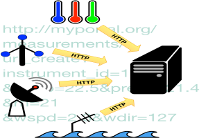
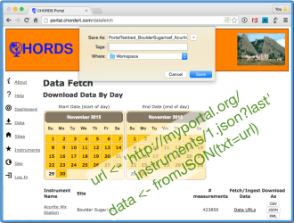

The CHORDS project is inspired and funded by the National Science Foundation EarthCube initiative.
Create your personal CHORDS server in the Cloud where you can observe your data with ease.
Use your own server or use Grafana to customize, view, and sort your data.

Simple HTTP queries send your real-time data to your CHORDS server.
You can view your data and instrument performance on your browser of choice.
Easily detect instrument problems and system performance issues.

Use web forms on the server to download data files.
Pull data into programs and web pages using just a few lines of code. All common languages provide simple methods for this.
Build monitoring applications to automatically track your measurements.
Forward your data to other standards-based cloud services. CHORDS will provide automatic registration functions for connecting to visualization, mapping, data federation and other such services. (Upcoming feature)